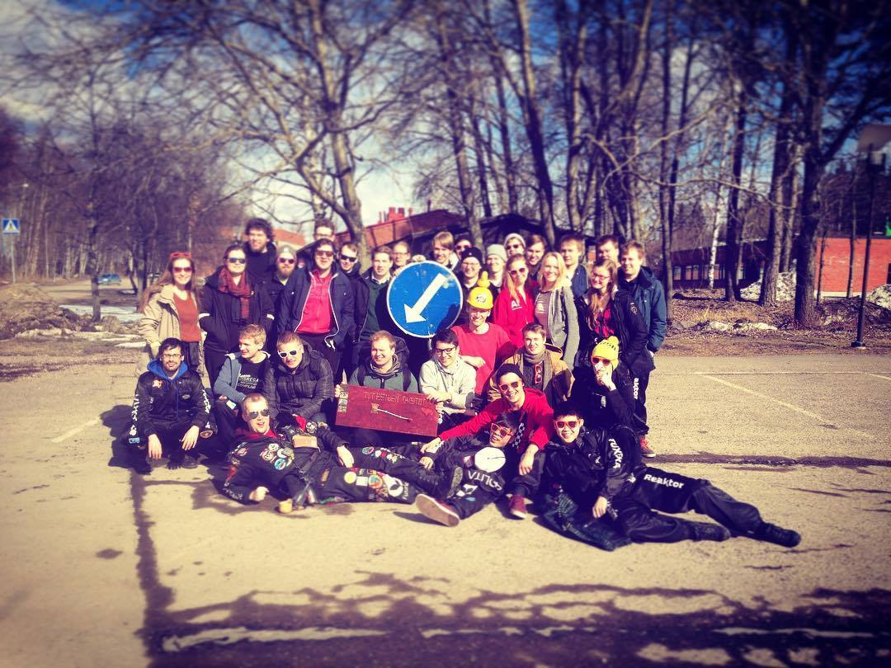

Waarin viikkotiedote 12/2016 - Titeenivoitto!
21.03.2016 fuksit / viikkotiedote / vappupokemon /
Moi!

Käytiin Turussa voittamassa kaikkien Suomen tietoteekkareiden taistot! Huikeaa duunia kaikki, ja eritoten fuksit. <3 Vaikkei Jukkaa tänä vuonna saatukaan, oli teillä uskomattoman hyvä pöhinä päällä! Huippua. :))
Tällä viikolla on taas hiljaisempaa kun on aika siirtyä pääsiäisloman viettoon. Itse lähden torstaina pitkästä aikaa Kuopioon, ja lepään vähän aikaa ennen täyttä wappumenoa.
Yritin tähän waarinmailiin tiivistää wapun tärkeimmät jutut, lukekaa läpi jos ette jo viime viikolla sitä tehneet. :)
<3 ultsi
Sisällysluettelo
- Tärkeää
- Fuksiwappu, TL;DR
- Fuksimajurin ensimmäinen päiväkäsky
- Wappuluennon informaatio
- Puuttuvat pisteet
- Waarin päivystysaika
- Sitsit-työpiste jaossa: 12.3. tai 23.3.
- Fuksi- ja kilta-asiat
- Munasitsit 23.3.
- Museokäynti - ti 29.3.
- Collegeilta - Ti 29.3.
- Megazone - ma 11.4., ilmo aukeaa 23.3.!
- AYY & Muut
- Julkku-kauden avajaiset!
- Töihin wappubileisiin 2016!
- Aava Afterparty-toimikunnan 2016 rekry
- Ilmoita myöhästyneestä kurssiarvostelusta
- Työkaluja jännittävin tilanteisiin –työpaja
- Viimeinen mahdollisuus hakea viljelypalstaa Aalto Gardenista
- Insinöörikilpailu EBEC 1.4. @Urban Mill
- Opiskelijat laulavat! -muistitietokeruu opiskelijalaulukulttuurista 15.3.–30.6.2016
- Aalto Adventure Race 7.5.2016
- Late night with Unisport Kumpulassa 1.4.2016
- Ilmoittautuminen tripin purjehduskursseille on käynnissä
- Wappupokemon!
Tärkeää
1. Fuksiwappu, TL;DR ja tärkeimmät deadlinet:
Jos et jaksa lukea kaikkea alempaa wall-of-textiä läpi, lue nämä, jotta saat itsellesi mahdollisimman hauskan fuksiwapun aikaiseksi!
Ilmoittaudu Tietokillan fuksipeijaisjoukkueeseen
Fuksimajurin ensimmäisessä päiväkäskyssä määrättiin kaikkien kiltojen välisistä fuksipeijaisista. Fuksiwappu koostuu suurimmaksi osaksi fuksipeijaisista, ei siis kannata jättää tätä väliin. Ilmoittaudu Tietokillan fuksipeijaisjoukkueeseen rustaamalla nimesi tänne: http://tietokilta.fi/tapahtumat/ilmot/fuksipeijaiset2016
Ilmoittaudu Ödwentsöön - la 2.4.
Ödwentsö on pakollinen osa wappupistettä. Ilmoittaudu siihen täällä: http://tietokilta.fi/tapahtumat/ilmot/odwentso2016. Voit halutessasi muodostaa itsellesi oman joukkueen jo valmiiksi! Huomaa, että Ödwentsön ilmoittautuminen menee kiinni aikaisin, jo ensi viikolla!
Jos et pääse 2.4., pistä viestiä fuksiwaari@tietokilta.fi.
Varaa itsellesi torstai-ilta 21.4.
Jotta teekkari voi syntyä, on fuksin kuoltava. Varaa itsellesi ilta-yö 21.4. kalenterista. Jos et pääse, pistä viestiä fuksiwaari@tietokilta.fi.
Ilmoittaudu yöjäynään
Mikäli wapututtaa aivan huimasti, ja haluat päästä osaksi Otaniemen vaietuimpia salaisuuksia sekä mahtavaa menoa, kannattaa ehdottomasti ilmoittautua yöjäynään. Yöjäynä on osa fuksipeijaisia. Siihen osallistuneet eivät saa kertoa kokemuksestaan mitään eteenpäin, mutta voin sanoa, että yöjäynä on se ykkösjuttu mitä Otaniemessä voi tehdä!
Lisää yöjäynästä ja hakemisesta: https://tietokilta.fi/tapahtumat/938
Fuksispeksit 29.4.
Kaikkien kiltojen fuksien väliset speksit nähdään A-salissa 29.4. klo 16:30. Varaa aika jo nyt!
Lakkienjako ja zombieaamiainen 30.4. klo 6:15
Fuksiwapun huipentuma, teekkarilakin saaminen koittaa 30.4. Sitä ennen on aamupala klo 6:15 alkaen Neste oil -kabinetissa. Saavu sinne paikalle saadaksesi itsellesi esteettömyystodistuksen, jonka fuksimajuri vaatii lakin saamiseksi! Yhteislähtö tapahtuu Amfille tämän jälkeen, ja lakit jaetaan fuksipeijaisten määräämässä järjestyksessä.
1.5. Ullanlinnanmäen wappusillis
Koko Helsinki ja Otaniemi kerääntyy viettämään wappupäivää yhdessä Ullanlinnanmäelle, ja toivottavasti myös sinulla on teekkarilakki päässäsi!
2. Fuksimajurin ensimmäinen päiväkäsky
BUUM!
Fuksimajuri antoi ensimmäisen päiväkäskynsä, ja on siinä vihdoin suonut wapun järjestettävän. WOOP WOOP! Wappu tulee! <3
Nyt teidän tehtävä on ryömiä kiltikselle, löytää fuksimajurin päiväkäsky seinältä, sekä lukea se kokonaan. Informaatiota on paljon, lukekaa se tarkasti! Päiväkäsky löytyy keittiön oven vierestä kiltahuoneen seinältä.
3. Wappuluennon informaatio
Tiistaina 15.3. oli wappuluento, jossa oli aikamoinen infopläjäys ja koko fuksimajurin ensimmäinen päiväkäsky käytiin periaatteessa läpi. On siis hyvä kerrata! Wappuluennon presiksen voit käydä lukemassa täältä: https://prezi.com/msdnk9rkwggr
4. Puuttuvat pisteet
WAPPU-pisteen saa, kun osallistuu kahteen pakolliseen wapputapahtumaan: Ödwentsöön 2.4. ja Fuksintappoon 21.4.
Kypsyysnäyte-piste tulee suoritettua Ödwentsössä päivän aikana.
Teekkarimuseo-pisteen saa, kun osallistuu ohjatulle kierrokselle polyteekkarimuseossa. Ohjattuja kierroksia on 21.3. ja 29.3. Ohjattuja kierroksia järjestetään myös joka sunnuntai klo 12. Polyteekkarimuseon sisäänkäynti sijaitsee osoitteessa Jämeräntaival 3, isojen portaiden alapäässä.
Ilmoittaudu museokierroksille:
21.3. klo 16:00-17:00 https://tietokilta.fi/tapahtumat/ilmot/museo3
29.3. klo 16:00-17:00 https://tietokilta.fi/tapahtumat/ilmot/museo29_3
Tutustu fuksiwaariin -pisteen saa, kun käy juttelemassa 15 minuuttia kahden kesken minun kanssa. Laita viestiä fuksiwaari@tietokilta.fi, jos haluat varata ajan, tai tule maanantaisin klo 10-14 välillä morjestamaan kiltahuoneelle!
Laulukoe -pisteen saa, kun laulaa n+1 teekkarilaulua onnistuneesti minulle. N on ryhmän koko, ja yhden lauluista on oltava teekkarihymni, ja se on laulettava ulkoa. Oiva tilaisuus tähän on 12.4. järjestettävä laulusauna!
Fuksiopinnot -pisteen saa, kun on saanut 8op täyteen. Ei siis vaikea homma! :)
Työpisteitä tulee vielä ja pyrin tiedottamaan niistä heti, kun niistä tiedän! Mikä tahansa killan eteen tehty työ voidaan laskea työpiste-kategoriaan! Tule juttelemaan, että mitä voisit tehdä killan hyväksi, niin katsotaan miten se sopii työpisteeksi! :)
5. Waarin päivystysaika
Minut löytää yleensä vakioaikaan maanantaina klo 10:00-14:00 Tietokillan kiltahuoneelta päivystämästä. Tule rohkeasti vain juttelemaan, hakemaan fuksipisteitä, tai suoraan Waarin warttiin! Tai vaikka vaikuttamaan viikkomailiin. ;)
6. Sitsit-työpiste jaossa: 23.3.
Killan IE kaipaa apua, oletko se juuri Sinä?
Siitä kahden viikon päästä 23.3. TiK ja SIK sitsaa yhdessä Munasitseillä! Täällä on jo apukäsiä, mutta muutama lisää ei ole pahitteeksi. Samanlaista työtä tarjolla kuin myös NVSK-sitseillä.
Jos kiinnostuit työskentelemään jommassa kummassa, ota yhteyttä Isäntään tai Emäntään ie@tietokilta.fi
Fuksi- ja kilta-asiat
1. Munasitsit - ke 23.3.
Munasitko pääsiäisen suunnitelmat? Tekeekö mieli jänistää perheen luota? Puuttuuko pääsiäismuniltasi tipukaverit?
Keskiviikkona 23.3. Smökissä kuoriutuu bileet! Ovet aukeavat 18.30 ja sitsit alkavat 19.00.
SIK ja TiK kohtaavat Munasitsien merkeissä! Toivotamme myös muut munien ystävät tervetulleiksi mukaan.
Ilmottautuminen aukeaa 8.3. klo 12.00 osoitteessa http://sik.ayy.fi/fi/signup/698
Paikkoja on kiintiöttäin:
SIK 50, TiK 50 ja avoin 60
Mitä: MUNAsitsit
Missä: Smökissä
Milloin: 23.3. klo 19.00 (ovet klo 18.30)
Hinta: 15€
Dresscode: pääsiäis(MUNAMUNAMUNAMUNA)
Osallistumalla:
Työskentelemällä sitseillä (ota yhteyttä ie@tietokilta.fi):
2. Museokäynti - ti 29.3.
1958 perustettu Polyteekkarimuseo on Suomen vanhin ja ainoa opiskelijoiden kulttuurihistoriaa esittelevä museo. Museo esittelee teekkarikulttuuria laajasti esineiden ja dokumenttien avulla. Mukaan on kertynyt jo yli sadalta vuodelta teekkarihistoriaa. Kannattaa muistaa, että Otaniemen polyteekkarimuseo on Suomen AINOA opiskelijakulttuurimuseo, tällaista ei ole missään muualla!
Teekkarimuseokäynti on yksi pakollinen osa fuksipistekorttia ja mahdollista lakinsaantia. Käymällä ohjatun kierroksen läpi (kestää noin tunnin), saat museopisteen ja olet taas askeleen lähempänä lakkia. Museokierrokselle voit ilmoittautua alla olevan lomakkeen avulla.
http://tietokilta.fi/tapahtumat/ilmot/museo29_3
3. Collegeilta - ti 29.3.
Punaisia mukeja, messevää ruokaa ja vapauden henkeä!
Pääsiäisen jälkeisenä tiistaina OK20:ssä vallitsee jenkkitunnelma, kun tila täyttyy punaisista kupeista, jenkkiherkuista ja juomapeleistä! Kerää itsesi ja kaverisi ja tule syömään itsesi jenkkimittoihin ja juomaan itsesi pelikuntoon! Illalla ei tarvitse hikoilla vain peli- tai ruokapöydissä, vaan myös sauna on tulilla.
Mitä: Amerikkalaista tunnelmaa hyvän ruoan, paremman seuran ja parhaiden pelien kanssa.
Missä: OK20 iso puoli
Milloin: 29.3. 7:00pm
4. Megazone - ma 11.4., ilmo aukeaa 23.3.!
TiKkiläisten on taas tullut aika ottaa toisistaan mittaa lasersodan jalossa taidossa! Seuraava suuri Megazone-taistelu järjestetään 11.04. klo 20:00 alkaen Helsingin Salmisaaren Liikuntakeskuksessa. Tunnin vuoron aikana ehditään pelata useampi matsi eri joukkueilla. Mikäli ilmo saadaan täyteen, eeppisen taiston hinnaksi tulee 14€.
Ilmoittautuminen on sitova.
http://tietokilta.fi/tapahtumat/ilmot/megazone2016
AYY & Muu
1. Julkku-kauden avajaiset!
Siintääkö silmissäsi jo mahdollisen Wapun kuohuvat kuplat ja riemukkaat riennot? Tuntuuko siltä, että kevätlukukausi ei lopu koskaan? Menivätkö toukokuun vuokrarahat jo parempiin suihin? Ei hätää, sillä Julkku tarjoaa hetkellisen helpotuksen arjen ahdistukseen!
Perjantaina 1.4. OK20:n sisäpiha ja yläkerta täyttyvät hellän dynaamisesta tunnelmasta, kun höyryävä palju ja sihisevä kiuas kutsuvat väsyneen opiskelijan rentoutumaan rankan viikon jäljiltä. Henkistä ravintoa tarjoilee menoa nostattava DJ, eikä Alepan antimiin tottunut mahakaan jää murisemaan pöytien notkuessa herkuista. Lisäksi paikan päällä on ainutlaatuinen mahdollisuus ihastella, hypistellä ja makustella vuoden 2016 myyjätuotteita, sekä tehdä elämäsi diili!
Ole valppaana myös päivällä, sillä ympäri kampusta kiertelee Julkun lähettiläitä jakamassa korkealentoista ilosanomaa. Erityisesti Päälafkan / Kanditalon / Otakaari 1:n aulan kautta kannattaa pyörähtää, sillä bongaamalla cowboyt ja -girlit voi iltasi lähteä sutjakkaammin käyntiin!
MITÄ: Julkkukauden avajaiset!
MILLON: 1.4.2016 klo 17:00
MISSÄ: OK20 yläkerta & piha (TEKin vanhat tilat)
MIKSI: Koska tenttiin ehtii lukea lauantainakin!
FB: https://www.facebook.com/events/469256383261449/
2. Töihin wappubileisiin 2016!
2016 Wappubileet järjestetään 30.4. Otaniemen läheisyydessä ja vuoden tärkeimmät juhlat tarvitsevat myös paljon työntekijöitä! Kaipaamme tekijöitä erilaisiin tehtäviin, kuten lipunmyyntiin, järjestyksenvalvontaan, roudaukseen, koristeluun, tekniikkaan, ruoanlaittoon, baariavuksi, pakulla ajeluun ja mielellään myös video/valokuvaukseen tai promon (videoiden) tekemiseen.
Töihin pystyy ilmoittautumaan keskiviikkona 23.3. klo 10.00 alkaen tämän linkin takana: https://lomake.ayy.fi/jtmk/tyontekijaksi-wappubileisiin-2016/
Työntekijät saavat ilmaisen sisäänpääsyn erillisestä VIP-ovesta, haalarimerkin, toisen kahdesta vaaleanpunaisen nyörin ansaitsemiseen vaadittavasta kiinnityksestä, sekä selviytymispakkauksena toimivan Wappukorin mukaan Ullikselle! Kaikki työntekijät varmistavat myös paikan Wappuisessa tilausbussikuljetuksessa Otaniemestä suoraan Ullikselle 1.5.!
Mahdollisia kysymyksiä voi esittää maililla bilehtööreille jtmk@list.ayy.fi. Lomakejärjestelmä suljetaan, kun meillä on tarpeeksi työntekijöitä joten nopeus on valttia.
3. Aava Afterparty-toimikunnan 2016 rekry
Aalto Afterparty on yksi vuoden suurimmista tapahtumista ja samalla uusien opiskelijoiden ensikosketus Aalto-yliopiston juhlakulttuuriin. Viidennen juhlavuotensa kunniaksi kootaan ensimmäistä kertaa Afterparty-toimikunta, joka pääsee suunnittelemaan ja toteuttamaan tätä lukuvuoden käyntiin räjäyttävää spektaakkelia! Haluaisitko sinä olla mukana tekemässä tästä vuodesta vieläkin isompaa?
Afterparty-toimikunnassa tehtävät jakautuvat jokaisen vahvuuksien ja mielenkiinnon mukaan. Toimikunta kokoustaa muutaman viikon välein ja tapahtuman lähestyessä useammin. Toimikuntaa vetävät yhdessä Aavan Celebrantti ja Bilefantti. Oletpa siis kiinnostunut vaikka markkinoinnista tai koristelusta, tai haluat vain olla mukana järkkäämässä luultavimmin vuoden suurinta juhlaa, hae rohkeasti mukaan!
Hakuaika alkaa ma 21.3. ja päättyy maanantaina 4.4. klo 23:59 osoitteessa http://ayy.fi/stop/kulttuuri-ja-tapahtumat/afterparty/
4. Ilmoita myöhästyneestä kurssiarvostelusta
Aalto-yliopiston opetuksen ja opiskelun säännöstössä määrätään, että tentit ja muut opintosuoritteet on tarkistettava ja kirjattava opintorekisteriin kuukauden kuluessa. Jos tenttisi tulokset tai opintopisteesi ovat myöhässä tästä määräajasta, voit ilmoittaa siitä Aallon korkeakoulujen opintoasianpäälliköille.
ARTS: Leena Koskinen (leena.koskinen@aalto.fi)
BIZ: Margareta Soismaa (margareta.soismaa@aalto.fi)
CHEM: Hanne Puskala (hanne.puskala@aalto.fi)
ELEC: Perttu puska (perttu.puska@aalto.fi)
ENG: Marjo Immonen (marjo.immonen@aalto.fi)
SCI: Mari Knuuttila (mari.knuuttila@aalto.fi)
5. Työkaluja jännittävin tilanteisiin
–työpaja
Jännittätkö esiintymistä? Tai ryhmätöitä? Tuntuuko uusiin ihmisiin tutustuminen vaikealta? Entä tunneilla vastaaminen?
Työpaja on tarkoitettu opiskelijoille, joilla jännitys vaikuttaa opiskeluun ja jotka toivoisivat keinoja jännityksen kanssa pärjäämiseen. Jännittämistä on monenlaista, yksi jännittää esiintymistä, toinen sosiaalisia tilanteita, kolmas jotakin aivan muuta. Työpajassa on mahdollisuus käsitellä erilaisia tilanteita ja jännittämistä. Työpaja on suomenkielinen.
Kokoontumisajat maanantaisin klo 12-14, 11.4.-16.5.2016. Ilmoittautumiset opintopsykologi(at)aalto.fi 4.4. mennessä. Lisätiedot: https://into.aalto.fi/pages/viewpage.action?pageId=18387906
6. Viimeinen mahdollisuus hakea viljelypalstaa Aalto Gardenista
Kevät ja viljelykausi lähestyvät. Vielä olisi mahdollisuus vuokrata palsta Otaniemen kaupunkiviljely-yhdistykseltä. Viljelypalstat sijaitsevat Martti Levónin puistossa Otaniemessä, Ossinlammen läheisyydessä. Palstan hinta riippuu sen koosta (13 euroa kiinteä palstamaksu, 6,5 euroa per neliömetri). Jos kiinnostuit niin ole yhteydessä Otaniemen kaupunkiviljely-yhdistyksen hallitukseen garden-hal@list.ayy.fi.
7. Insinöörikilpailu EBEC 1.4. @Urban Mill
BEST Helsinki järjestää jälleen kansainvälisen insinöörikilpailu EBEC:in esikarsintakierroksen, jonka voittajajoukkue lennätetään toiselle kierrokselle Kööpenhaminaan. Kilpailussa nelihenkiset joukkueet ratkaisevat Swecon antamaa Case Study-tyyppistä ongelmaa. Tapahtuma on ilmainen ja kaikille Aallon opiskelijoille avoin. Ilmaisen Kööpenhaminan matkan lisäksi luvassa on hyviä palkintoja ja osallistujille tarjotaan lämmin ruoka sekä jatkot Tieto-saunalla. Lisätietoa sekä ilmoittautuminen Facebookissa sekä tapahtuman nettisivuilta.
http://best.ayy.fi/ebec16/
https://www.facebook.com/events/1670753833142323/
8. Opiskelijat laulavat! -muistitietokeruu opiskelijalaulukulttuurista 15.3.
–30.6.2016
Opiskelijat laulavat ja ovat laulaneet kautta aikojen melkein missä vain: illanistujaisissa, pöytäjuhlissa, mielenosoituksissa, saunan lauteilla, approilla, matkoilla ja kulkueissa. Laulut ovat kiinteä osa opiskelijakulttuuria. Ne liittyvät arkeen ja juhlaan ottaen toisinaan kantaa kriittisesti, toisinaan arvostusta osoittaen. Lauluperinteet kulkevat järjestöissä, mutta tuovat yhteen myös väljempiä yhteisöjä. Laulu on tapa osoittaa yhteenkuuluvuutta ja siirtää perinteitä.
Millaisia opiskelijalauluihin liittyviä muistoja sinulla on? Kerro muistosi ja kokemuksesi opiskelijoiden laulukulttuurista. Keruun kohteena on sekä nykyisten että entisten opiskelijoiden muistot niin järjestöjen kuin yksittäisten opiskelijoidenkin näkökulmasta. Lisäksi halutaan tallentaa opiskelijoiden omia sanoituksia ja niihin liittyviä tarinoita.
Keruuseen toivotaan vastauksia kansallisesti oppiaine- ja korkeakoulutaustasta riippumatta. Keruun järjestävät Suomalaisen Kirjallisuuden Seura, Helsingin yliopiston ylioppilaskunta ja Helsingin yliopiston ylioppilaskunnan historian ystävät ry.
Lisätietoja ja keruuseen osallistuminen: http://www.finlit.fi/fi/arkisto-ja-kirjastopalvelut/hankinta-ja-kokoelmapolitiikka/keruut/opiskelijat-laulavat/
9. Aalto Adventure Race 7.5.2016
Aalto Adventure Race on 7.5.2016 järjestettävä seikkailu-urheilukilpailu, jossa kilpailijat kiertävät pyöräillen 3-4 hengen joukkueissa rasteja ja suorittavat annettuja tehtäviä. Rasteja on yhteensä 35 ympäri pääkaupunkiseutua ja aikaa suorittamiseen on 10 tuntia.
Aalto Adventure Racessa pääset haastamaan muut Aalto-opiskelijat oman ryhmäsi kanssa. Koe urheilu uudella tavalla ja nappaa Aallon seikkailullisimman ryhmän titteli itsellesi. Voittajille on tarjolla maineen ja kunnian lisäksi myös hienoja palkintoja.
https://www.facebook.com/events/1700465150238679/
10. Late night with Unisport Kumpulassa 1.4.2016
Aika: perjantai-ilta 1. huhtikuuta
Paikka: Kumpulan UniSport (Väinö Auerin katu 11)
Hinta: 0 €/ UniSport-kausikorilla tai 5 €/ilman kausikorttia asiakasryhmästä riippumatta.
Tule viihtymään ja virkistymään yhdessä ystävien kanssa ja tutustumaan muihin UniSportilaisiin! Luvassa on värikäs kattaus liikuntaa ja hyvinvointia ja rutkasti hyvää fiilistä aina puoleen yöhön saakka!
Osallistu tapahtuman Facebook Eventiin (https://www.facebook.com/events/234712290199856/) ja kutsu ystäväsikin mukaan!
11. Ilmoittautuminen tripin purjehduskursseille on käynnissä
Merille mieli? Teekkaripurjehtijoiden käytännön purjehtijakurssit tulevat taas! Ilmoittautumislomake on auki osoitteessa http://trip.ayy.fi/wordpress/?page_id=231
Purjehtijakurssilla opetetaan kattavasti purjehtimisen perusteita ja se on tarkoitettu aloittelijoille tai vain vähän purjehduskokemusta omaaville henkilöille. Kokeneemmat purjehtijat voivat syventää osaamistaan saaristopäällikkökurssilla, joka antaa perusvalmiudet toimia purjeveneen kipparina. Lisätietoa kursseista ja aikatauluista löydät nettisivuiltamme: http://trip.ayy.fi/wordpress/?page_id=231
Kurssien hinta on edullinen 190e opiskelijoille ja 340e valmistuneille. Edellytyksenä osallistumiselle on Teekkaripurjehtijat ry:n jäsenyys (AYY opiskelijat 25e, muut opiskelijat 35e ja valmistuneet 55e). Jäseneksi voi liittyä kerhon nettisivuilla vaikka heti tai kurssi-ilmoittautumisen yhteydessä.
Kyselyihin vastaa kerhon varakommodori ja koulutusvastaava Elina Valkonen, elina.valkonen(at)helsinki.fi
Wappupokemon!
40 päivän kohdalla wappupokemon on Wigglytuff!

Wapedi wap wap wappu tulee!!! <3
<3 ultsi